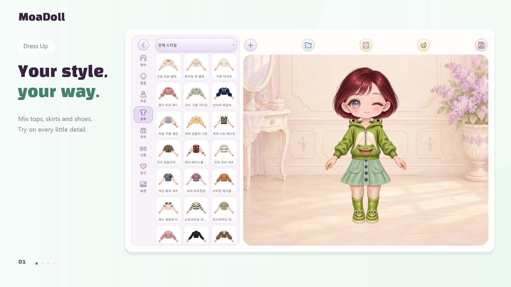
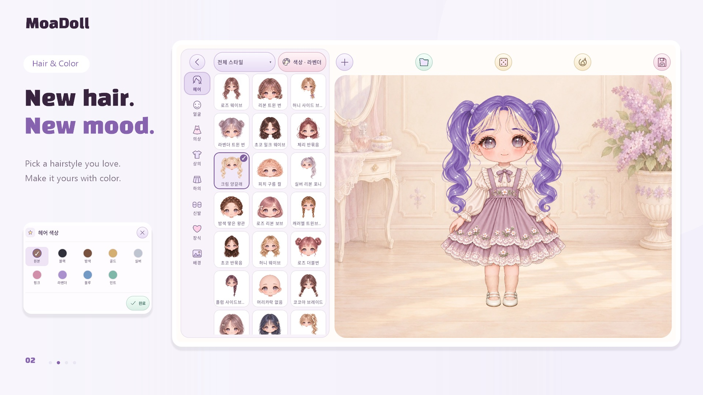
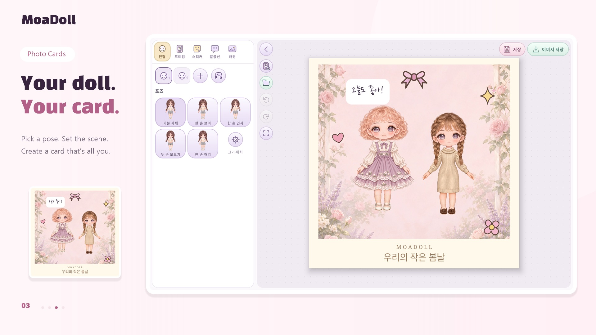
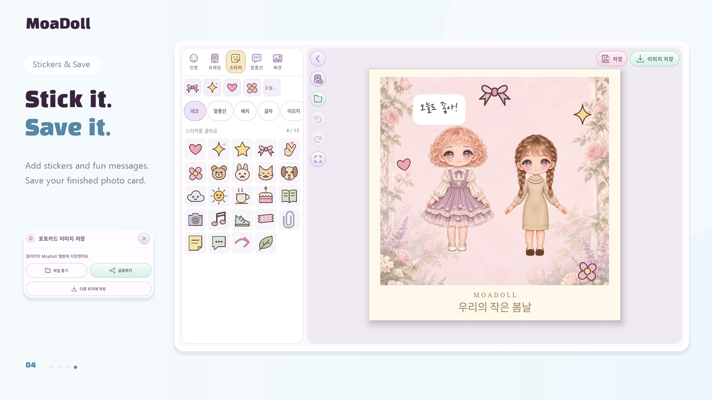

A SMALL GUIDE TO YOUR WORLD
How to play
From your very first doll to a card worth keeping. Let’s take it one little step at a time.
STEP 01
Make your own doll
Open Dress up from the home screen to continue editing the doll you see. Choose Add new character for a fresh start, then pick hair, expressions, clothing, shoes, accessories, and a background. Save your favorite look.


STEP 02
Find your favorite color
Open Color in the hair tab to choose the original shade or eight additional colors. Your choice stays with the saved doll and editing draft, and carries over to photocards.


STEP 03
Tell a story with a card
Create a new photocard in the studio and place up to three dolls. Pick poses, adjust size and position, and add backgrounds, frames, stickers, and speech bubbles. Choose 2:3, 1:1, 9:16, or 16:9.


STEP 04
Save it. Send a little happiness.
Save keeps an editable card; Save image creates a PNG. Regular cards have a 1800px long edge. Friendship cards add a chosen message to a 1200×1800 PNG that you can send through the Android share sheet.


A few little questions
Do I need an account or internet connection?
The current app lets you dress up dolls, edit cards, and save without an account. The app does not request internet permission. Sharing through another app or using Android system backup may require those services to connect.
Do I need to buy items?
All 500 items are available in the current version. There are no ads or in-app purchases. Draws and point exchanges are disabled; item quantities and point history from earlier versions remain stored locally.
Why can’t I see my card in the gallery?
Save and Save image do different things. Choose Save image to create a PNG and wait for it to finish. Check available storage and the MoaDoll album. On Android 8 or 9, also check the requested storage permission.
Are my cards uploaded automatically?
No. After saving, you choose the destination app and recipient in the Android share sheet. MoaDoll has no friend list or public feed. Manage any shared copies in the service you selected.
What happens if I uninstall or change phones?
Clearing app data or uninstalling may remove editable work. Android backup or device transfer may restore some data, depending on your settings, but recovery is not guaranteed. Export important cards first. A PNG cannot restore the editable card.
Can I export GIFs or videos?
The current studio is a still photocard editor with PNG export. Animation, GIF, and video features from older versions are not part of the current experience described here.